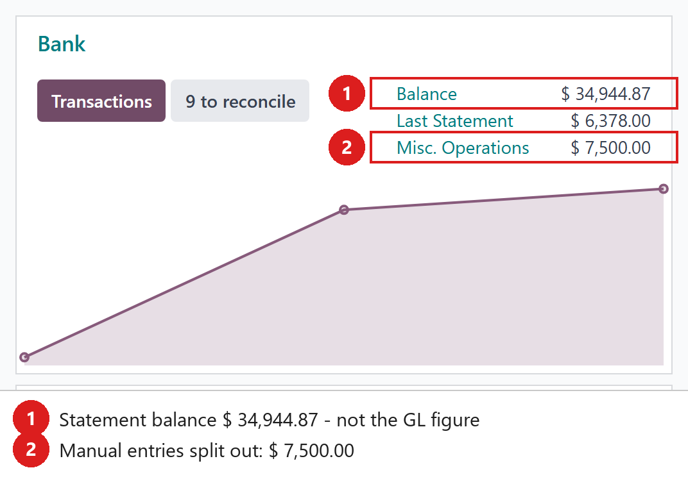
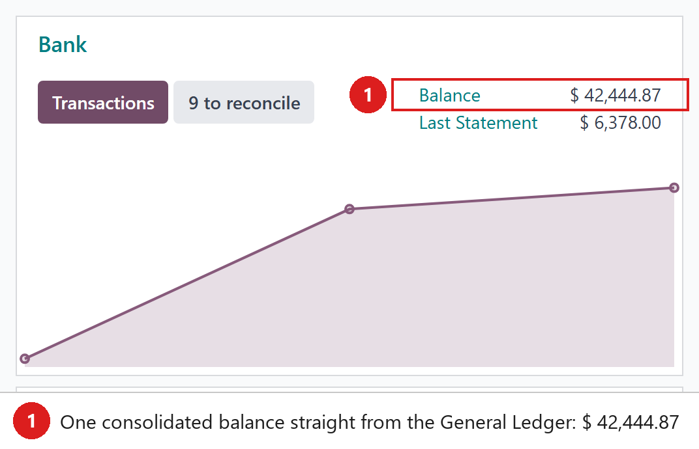
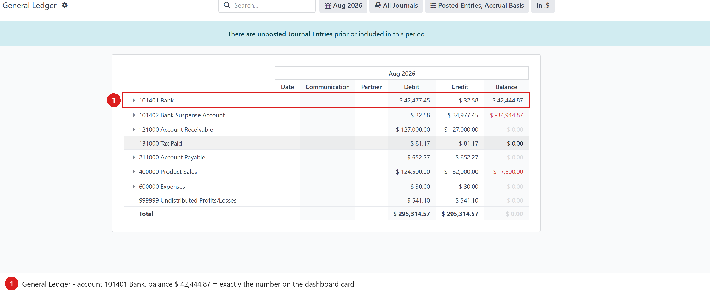

One number you can trust — the bank/cash card shows the General Ledger balance, not a statement estimate split over three lines.
On the standard Accounting dashboard, the Bank / Cash kanban card splits the money into up to three different lines:
The moment an accountant posts a manual journal entry that touches the bank or cash account (an opening balance, a correction, a bank charge booked in a Miscellaneous journal…), the amount lands in Misc. Operations and the main Balance line no longer matches the General Ledger. Every day someone asks: “why does the dashboard say one thing and the GL report another?” This module ends that conversation: the card shows exactly one number, taken straight from the General Ledger.
Below, the bank account really holds $ 42,444.87 in the General Ledger. The standard card shows $ 34,944.87 as “Balance” and hides the remaining $ 7,500.00 of manual entries on a separate “Misc. Operations” line — no line on the card matches the GL report.

Same database, module installed: the card now shows a single consolidated Balance of $ 42,444.87 — the sum of all posted journal items on the journal’s bank/cash account. The confusing “Misc. Operations” split is gone because those entries are already inside the number.

Open Accounting → Reporting → General Ledger: account 101401 Bank shows the same $ 42,444.87. Dashboard and GL now agree, by construction — the card is computed from the very same posted journal items the report reads.

account.journal → _fill_bank_cash_dashboard_data(): after the standard
computation it replaces the card’s balance with one SQL aggregation over
posted account.move.line rows on the journal’s default (bank/cash) account.amount_currency
(journal currency); all others sum balance (company currency).
Tested on Odoo 17, 18 and 19 (Community and Enterprise).
Depends only on the standard account module.